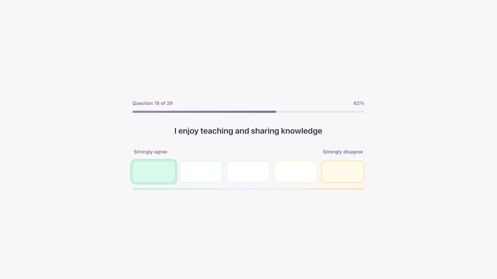
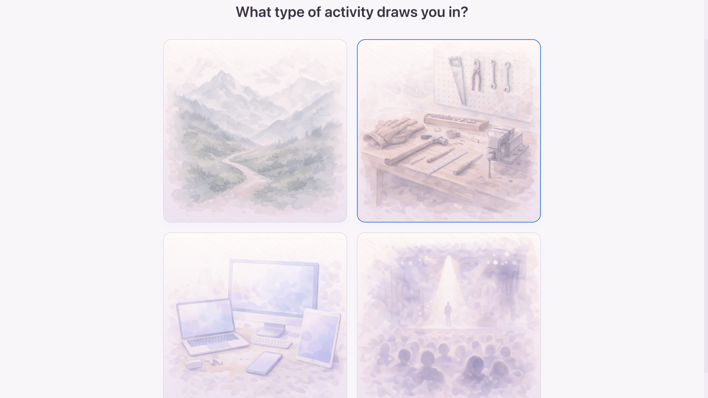
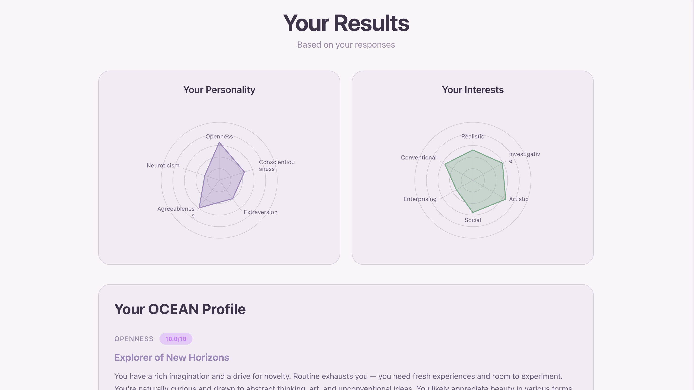
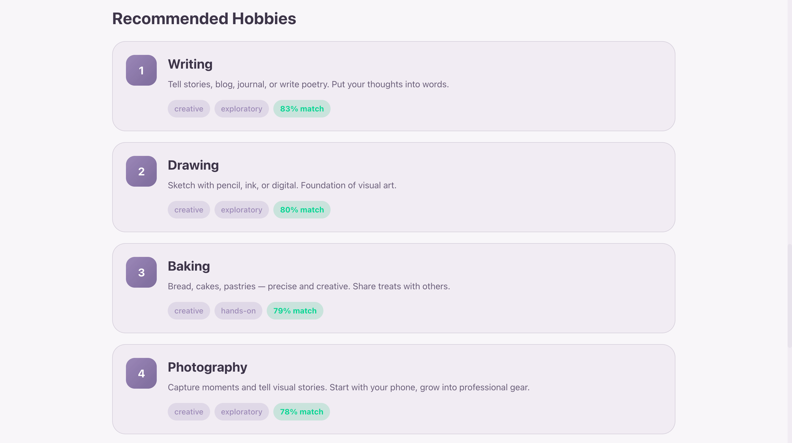

Hobby Finder
A case study about using a personality quiz to build trust, generate leads, and recommend hobbies in a more personal way.
Open / Play
Goal
The main goal of this project was to generate leads.
The idea was to first tell people something meaningful about themselves, build trust in the result, and only then move toward recommendations and product-related suggestions.
This creates a much stronger path than simply showing a product right away. First the person feels understood. Then the recommendation feels more relevant.
Main idea
The quiz is designed as a sequence: understand the person first, recommend second, sell later.
Instead of starting from the product, it starts from the user’s personality and preferences. That helps make the final recommendations feel more personal and more trustworthy.
Method
The project combines two different approaches:
- OCEAN personality model
- RIASEC professional aptitude testing logic
OCEAN helps describe the person in a compact but recognizable way. The second layer helps connect those personality traits to activities that are more likely to fit how the person actually functions.
Structure
The experience starts with a series of questions, followed by a more visual part using images.

This creates a better rhythm: first the player reflects, then reacts more intuitively. It also makes the quiz feel lighter and more varied.

Result
At the end, the quiz describes the person using OCEAN-based text.
The goal is to be as accurate as possible within the limits of a short test. The result should feel specific enough to build trust, while still staying readable and quick.

Hobby recommendations are generated using both the OCEAN profile and the aptitude-testing layer. This makes the output more useful than a generic “people like you may enjoy…” list.
Local discovery
The project also includes the ability to explore hobbies available around the user through Google Maps.
This helps bridge the gap between recommendation and action. Instead of just saying what might fit, the experience can also help show where to actually try it.

Why this format works
This format is useful because it creates value before asking for action.
A well-structured quiz can make users feel seen, increase trust in the recommendation, and make product suggestions feel more natural.
In that sense, it works not just as content, but as a lead-generation tool with a more personal entry point.
Tools
- Code: Cursor
- Images: ChatGPT
Try it
Go through the quiz once and pay attention to how the result is structured: first identity, then recommendations, then action.